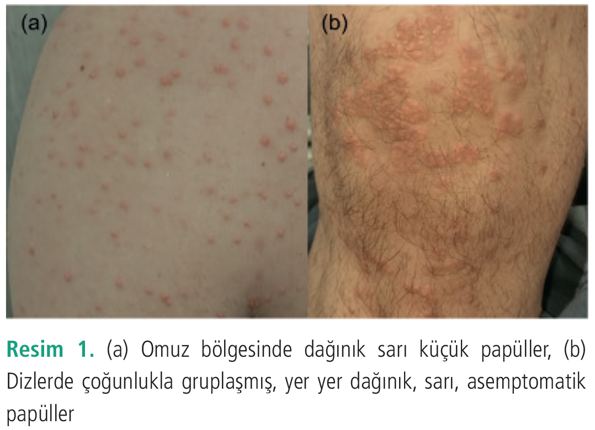
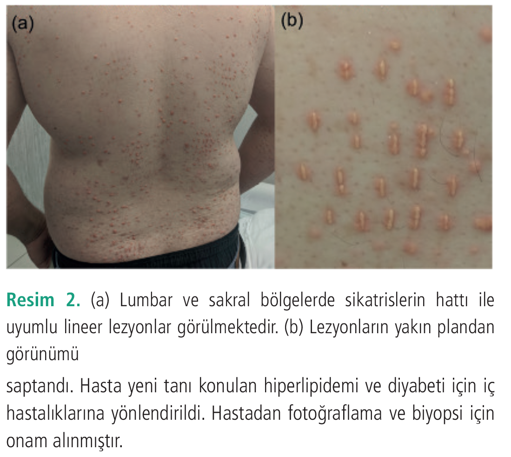

Olgu Sunumu
Köbner Fenomeni Gözlenen Bir Erüptif Ksantom Olgusu
1 Sağlık Bilimleri Üniversitesi, İstanbul Sancaktepe Şehit Prof. Dr. İlhan Varank Eğitim ve Araştırma Hastanesi, Deri ve Zührevi Hastalıklar Kliniği, İstanbul, Türkiye
Anahtar Kelimeler: Erüptif ksantomhiperlipidemihipertrigliseridemiizomorfik reaksiyonKöbner fenomeni
Keywords: Eruptive xanthomahyperlipidemiahypertriglyceridemiaisomorphic reactionKöbner’s phenomenon
Geliş: 23.05.2020Kabul: 01.06.2020Yayın: 24.12.2020
s. 24-26
Özet
ÖZET
Erüptif ksantom primer veya sekonder hipertrigliseridemi zemininde gelişen bir kütanöz ksantom formudur. Köbner fenomeni, diğer adı ile izomorfik reaksiyon, psoriasis, liken planus ve vitiligo gibi çeşitli deri hastalıkları ile tipik olarak ilişkilendirilmiş olsa da nadiren erüptif ksantom ve multisentrik retikülohistiyositoz gibi histiyositozlarda görülebilir. Bu olgu sunumunda Köbner fenomeninin nadir bir sebebi olarak bir erüptif ksantom olgusunu sunmayı amaçladık.
Tam Metin
Giriş
Köbner fenomeni, diğer adı ile izomorfik reaksiyon, psoriasis, liken planus ve vitiligo gibi çeşitli deri hastalıkları ile tipik olarak ilişkilendirilmiştir (1). Bu olgu sunumunda Köbner fenomeninin nadir bir sebebi olarak bir erüptif ksantom olgusunu sunmayı amaçladık.
Olgu Sunumu
Otuz yaşında erkek hasta polikliniğimize vücutta yaygın döküntü şikayeti ile başvurdu. Dermatolojik muayenede gövde ön ve arka yüzde dağınık yerleşen, alt ve üst ekstremitelerin ekstansör yüzlerinde gruplaşma eğiliminde asemptomatik, sarı küçük, sert, çok sayıda papüler lezyon mevcuttu (Resim 1a, b). Ayrıca, hastanın bel ağrıları nedeniyle daha önce yaptırdığı hacamat sikatrislerinin üzerinde, sikatrislerin hattı ile uyumlu şekilde lineer sarı lezyonlar gözlendi (Resim 2a, b). Laboratuvar incelemede trigliserid (5.680 mg/dL), total kolesterol (1.217 mg/dL) ve açlık kan şekeri (281 mg/dL) düzeyleri yüksek saptandı. Serum protein elektroforezinde monoklonal bant saptanmadı. Erüptif ksantom ön tanısı ile yapılan histopatolojik incelemede dermiste ksantoma hücreleri saptandı. Hasta yeni tanı konulan hiperlipidemi ve diyabeti için iç hastalıklarına yönlendirildi. Hastadan fotoğraflama ve biyopsi için onam alınmıştır.
Tartışma
Erüptif ksantom primer veya sekonder hipertrigliseridemi zemininde gelişen bir kütanöz ksantom formudur (2). Diyabet ve hiperlipideminin ilk habercisi olabilen erüptif ksantom, sırt, kalçalar ve ekstremitelerin ekstansör yüzlerinde eritemli veya sarı papüler lezyonlarla seyreder. Deri lezyonları dermisteki makrofajların dolaşan plazma lipoproteinlerini fagosite etmesi ile oluşur (3).
Köbner fenomeni travma uygulanan normal deride lezyon gelişimini tanımlar. Boyd ve Neldner (4) tarafından Köbner fenomeni dört farklı sınıfa ayrılmıştır. Buna göre, gerçek Köbnerizasyon psoriasis, liken planus ve vitiligoda görülmekte olup bu hastalıkların patogenezi ve prognozu ile sıkı bağlantılıdır. İkinci grup, psödoizomorfik yanıt, molluskum kontagiozum ve viral siğillerde olduğu gibi otoinokülasyona bağlıdır. Üçüncü grupta Darier hastalığı, perforan kollajenozlar vb. hastalıklar sınıflandırılmıştır. Bu hastalıklarda travmayı takiben lezyon gelişimi iyi tanımlanmıştır ve nadiren görülür, fakat Köbner fenomeninin tüm kriterleri karşılanmamaktadır. Son olarak yeterli kanıt olmaksızın bildirilen Köbner fenomenleri dördüncü gruba dahil edilmiştir.
Köbner fenomeni nadiren erüptif ksantom ve multisentrik retikülohistiyositoz gibi histiositozlarda görülebilir (5). Literatürde erüptif ksantom tanılı hastalarda olgu sunumlarında Köbner fenomeni bildirilmiştir. Bu olgularda kaşıma, çekiç travması, travmatik sikatris, kedi tırmalaması, dövme yapılan bölgeler ve vibrasyona bağlı Köbnerizasyon bildirilmiştir (3,5-11). Bizim olgumuzda erüptif ksantom lezyonları bölgesel vakumlama ve deride yüzeyel kesiler yapılarak uygulanan bir geleneksel yöntem olan hacamatın sikatrisleri üzerinde Köbnerizasyon göstermekteydi (12). Yukarıda bahsedilen Köbner fenomeninin Boyd ve Neldner (4) sınıflamasına göre erüptif ksantomun üçüncü gruptaki hastalıklar arasına dahil edilebileceğini düşünmekteyiz.
Erüptif ksantom olgularında Köbner fenomeninin patogenezinde travma ile dermal kan damarlarının bütünlüğü bozulduğunda, dolaşımdaki lipoproteinlerin dermise geçerek burada fagosite olmaları suçlanmaktadır (5). Ayrıca, ksantoma lezyonlarının diz ve dirsekler gibi ekstremitelerin ekstansör yüzleri ve kalça ve sırt gibi basınç bölgelerinde yerleşmeye eğilim göstermesinin de Köbner fenomenine bağlı olduğu düşünülmektedir (9).
Sonuç olarak, erüptif ksantom lezyonları çoğunlukla spontan olarak gelişse de nadiren Köbner fenomeni bildirilmiştir. Hastamızda hem tipik yerleşim yerlerinde, hem de sikatrisler üzerinde lezyonlar mevcuttu. Bununla beraber, erüptif ksantom olguları yalnızca travma bölgelerinde lezyonlarla da seyredebilmektedir (3). Bu nedenle, Köbner fenomeni gösteren dermatozların ayırıcı tanısında erüptif ksantom akla gelmelidir.


Kaynaklar
1.Weiss G, Shemer A, Trau H. The Koebner phenomenon: review of the literature. J Eur Acad Dermatology Venereol 2002; 16: 241-248.
2.Stark M, Stuart J. Eruptive xanthoma in the setting of hypertriglyceridemia and pancreatitis. Am J Emerg Med 2018; 36: 1524.e5-1524.e7.
3.Lehman JS, Nault AM, Smith SA, McEvoy MT. Linear yellow papules following a cat scratch. Int J Dermatol 2018; 57: 862-863.
4.Boyd AS, Neldner KH. The isomorphic response of Koebner. Int J Dermatol 1990; 29: 401-410.
5.Hanami Y, Yamamoto T. Eruptive xanthoma with isomorphic response of Koebner in a construction worker with severe hyperlipidemia. J Dermatol 2017; 44: e162-e163.
6.Barker DJ, Gould DJ. The Koebner phenomenon in eruptive xanthoma. Arch Dermatol 1979; 115: 112.
7.Goldstein GD. The Koebner response with eruptive xanthomas. J Am Acad Dermatol 1984; 10: 1064-1065.
8.Roederer G, Xhignesse M, Davignon J. Eruptive and tubero-eruptive xanthomas of the skin arising on sites of prior injury: two case reports. JAMA J Am Med Assoc 1988; 260: 1282-1283.
9.Miwa N, Kanzaki T. The Koebner phenomenon in eruptive xanthoma. J Dermatol 1992; 19: 48-50.
10.Scavo S, Magro G, Gurrera A, Gozzo E, Ignaccolo L, Neri S. Isomorphic response in eruptive xanthomas. Dermatology 2004; 209: 66-68.
11.Gao H, Chen J. Eruptive xanthomas presenting in tattoos. Can Med Assoc J 2015; 187: 356.
12.Okumuş M. Kupa Tedavisi ve Hacamat. Ankara Med J 2016; 4: 370-382.